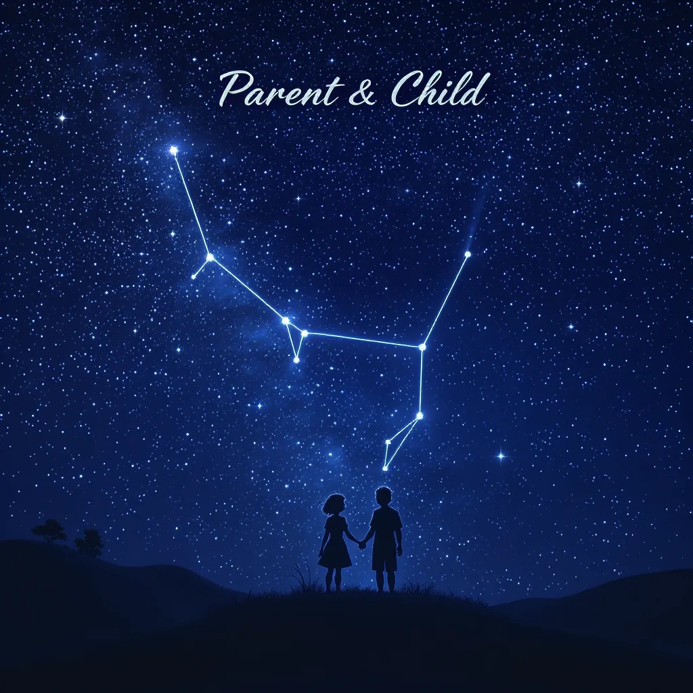
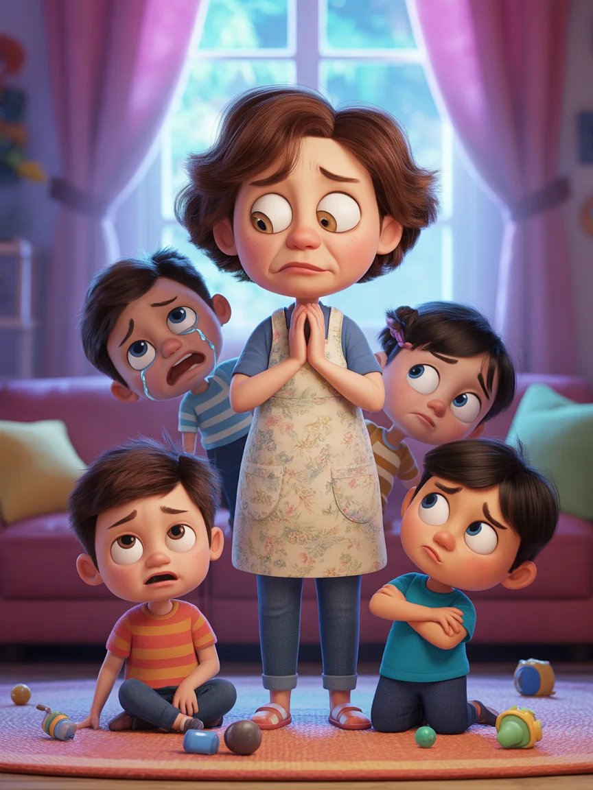
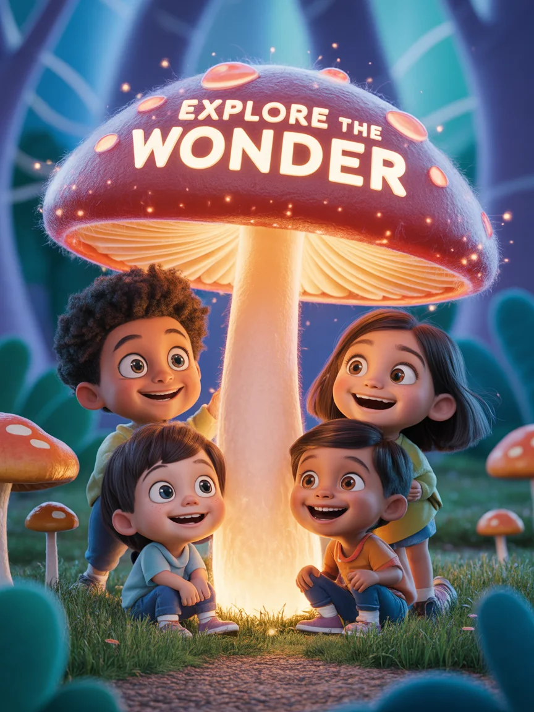
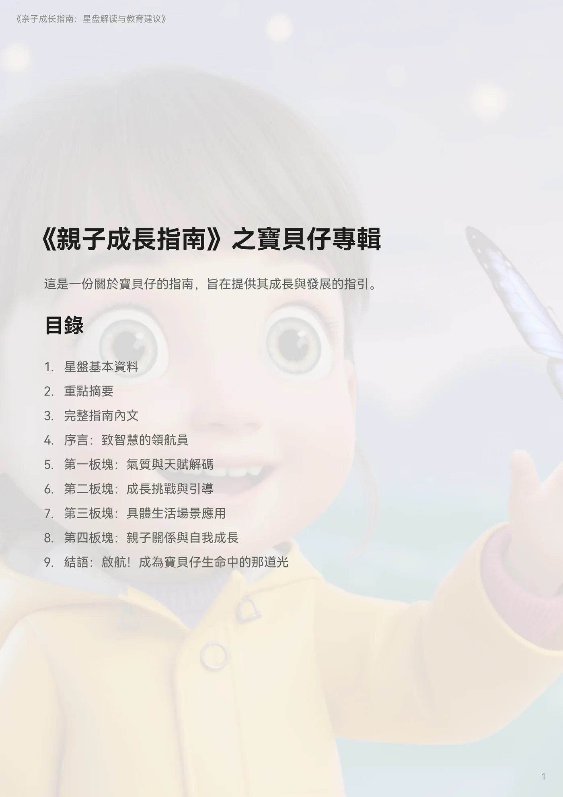
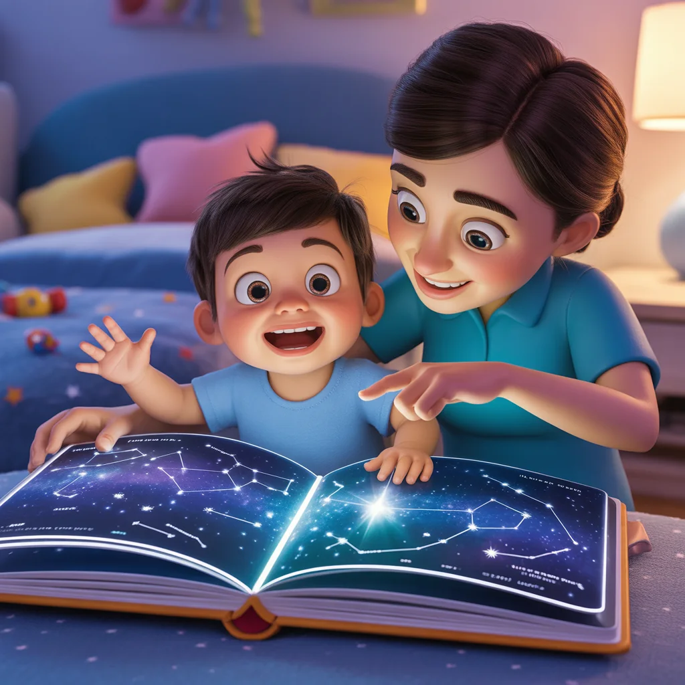
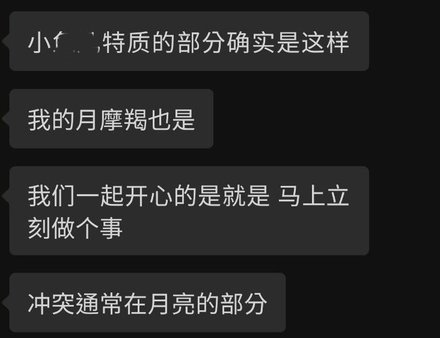
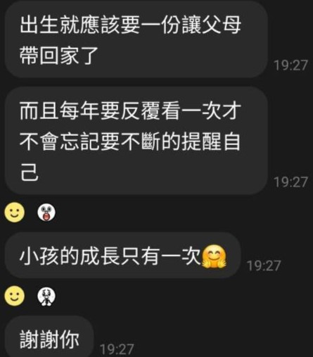
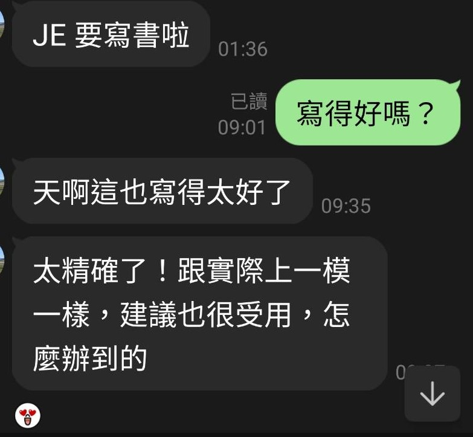

你是否也有這些困惑？
-
情緒爆發
孩子動不動就失控，我怎麼講都沒用？
-
潛力未發揮
明明很聰明卻拖拖拉拉、沒動力？
-
教養方式不適用
我的方式對別人小孩有效，對他完全無效？
-
內心想法成謎
為什麼總是跟我反著來？他到底在想什麼？
不是你沒耐心，只是你沒拿到他的專屬說明書。

每個孩子都是獨特的
專為3–12歲孩子設計的《親子成長指南》，是一份讓你「懂孩子」的教養工具書。
-
父母與孩子的個性橋接
翻譯彼此的差異，創造和諧親子關係
-
個別化解讀孩子的氣質與天賦
專屬你孩子的性格分析，而非套用模板
-
情緒管理與互動衝突策略
具體實用的應對方法，幫助親子溝通更順暢
我們怎麼做的？
- 🔍 每一份《親子成長指南》，都是從一組出生資料開始
- ✍️ 經過占星分析，解讀徵象語言
- 🎯 應用兒童心理學，結合生活實境
- 逐步轉化為可讀、可感、可用的內容
📎 每份《親子成長指南》都由專業團隊投入數小時反覆琢磨，為每一位孩子，量身定製出能被家長真正「讀懂與使用」的指南。

❌做測驗，❌填問卷，✅只要：
-
出生時間
建議誤差不超過30分鐘，以確保分析準確性
-
出生地點
提供城市即可，用於建立完整的節奏分析
-
孩子姓名
可使用暱稱，完成個人化內容
-
父母資料
選填，用於更完整的關係互動分析
資料僅用於本次內容客製化。應用範圍不涉及個人識別，敬請安心。
一份能被慢慢打開的祝福
把這份理解，送給一個你在乎的家庭
不是替父母決定答案，而是送他們一個理解孩子、重新靠近彼此的起點。
看看送禮方式
你將得到什麼？
這份指南不只是理論，更是實用的親子溝通工具書。每一頁都經過精心設計，讓你能輕鬆理解並立即應用於日常中。
📄 精心打造超過8仟字的PDF電子指南
-
個人分析解讀
詳細剖析孩子的氣質、節奏、互動偏好等特質，幫助你真正看見孩子的內在世界。
-
情緒節點解析
解讀情緒反應與家庭互動的關鍵節點，讓你能預見並妥善回應可能的衝突。
-
實用情境範例
針對常見教養場景提供具體溝通建議與策略示範，豐富你應對方式。
-
關係節奏圖像
呈現父母與孩子之間的互動模式，幫助你找到最佳的連結方式。
ℹ️這份指南設計為可長期使用的成長資源，隨著孩子的發展，你可以反覆閱讀，它會是你最珍藏實用的寶典。
我們的指南為什麼值這個價？
一眼看懂差異
你買的是一套真正幫你解決親子衝突的實用導航系統。
| 產品類型 | 價格區間 | 通常內容 | 我們提供 |
|---|---|---|---|
| 一般星盤解讀（純命盤） | NT$600～1200 | 解釋行星與星座配置，無生活指導 | ✅ 客製化分析 + 親子情境應用 |
| 教養顧問線上諮詢（60分鐘） | NT$1800～2500 | 口頭建議，無書面紀錄、無後續參考 | ✅ 可反覆閱讀 + 親子互動劇本 |
| 星座親子書籍（通用版） | NT$380～680 | 通則講解，無法應用於個別孩子 | ✅ 100%針對你的孩子與家庭配置 |
| 客製化占星PDF報告 | NT$1800～6000 | 偶有模版、缺少教育建議 | ✅ 整合心理學 + 星座 + 教育策略 |
| 本指南 | NT$3980 | ✅ 全客製｜育兒建議 | ❤️ 是你與孩子的理解橋梁 |

指南帶來的轉變
-
理解行為背後原因
知道孩子「為什麼那樣反應」，不再感到困惑
-
掌握互動平衡點
懂得「什麼時候放手，什麼時候給安全感」
-
有效溝通模式
擁有親子互動的具體劇本，說對話、做對事
很多爸媽看完說：「我終於理解他不是故意頂嘴，而是用他的方式呼救。」
家長們的真實心聲
來自實際使用《親子成長指南》的家庭，經同意分享。


